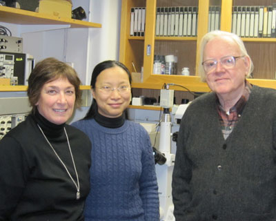

News Archives : 2010 : Marvels of Bacterial Swarming
by Howard Berg
January 13, 2010

(L to R) Linda Turner, Rongjing Zhang, and Howard C. Berg
When grown on a rich medium on agar, many bacteria elongate, produce more flagella, and swim in a thin film of fluid over the agar surface in swirling packs. Cells that spread in this way are said to swarm. This mechanism helps cells establish infections. We have been studying this process with the model bacterium Escherichia coli. When E. coli swims above a glass surface in an ordinary microscope-slide preparation, it spirals to the right, because the bundle of flagellar filaments that are pushing the cell from behind turn counter-clockwise and roll to the left, while the cell body, that is in front, turns clockwise and rolls to the right. In swarms, the cells tend to swim forwards, spiraling to the left about as much as to the right.
This could happen if the surface of the swarm (i.e., the air/water interface) were stationary, so that the cells moved between two fixed surfaces, and rolled on one as much as the other.
We showed that this was the case by depositing small particles of magnesium oxide smoke on the surface. As shown in the figure, a smoke particle remains in about the same place as the cells swarm by underneath. The particle does diffuse, but its displacement is relatively small (red track in panel D, showing its displacement over the course of the experiment, which lasted 6.7 sec). We believe that the particle was embedded in a surfactant monolayer that was pinned at its edges. Such a monolayer can markedly reduce water loss. The ability to move rapidly between closely opposed fixed surfaces is a useful trait.
Watch movies of Swarming E.coli
Read more in PNAS